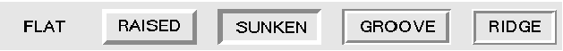
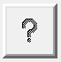

Le langage python 3 et l'Interface
Graphique Tkinter
|
| Attributs standard tkinter |
| relief |
 |
| anchor |
Définit la position du widget par rapport à son conteneur  |
| bitmap | affiche une image noir et blanc sur le widget. les bitmap suivants sont disponibles 'error', 'gray75', 'gray50', 'gray25', 'gray12', 'hourglass', 'info', 'questhead', 'question', and 'warning'  B2 = Button(fp, bd=5, bitmap='question', width=50, height=50) ==>  On peut utiliser n'importe quelle image au format .xbm en précédant son nom par le caractère @ bitmap = "@monfichier.xbm" |
| cursor | Permet de modifier le pointeur de la souris. Voici une liste de curseurs disponibles. |
| index |
Position du curseur dans un widget.
Utilisé par certaine méthode pour insérer ou supprimer du texte dans un widget INSERT ou
"insert" position actuelle du curseur
END ou "end" fin du widget CURRENT ou "current" position du pointeur souris ANCHOR premier caractère de la zone sélectionnée (s'il y en a une) Pour un widget à une seule ligne comme le widget Entry: 0
indice du premier caractère
n indice du (n+1)ème caractère Pour un widget à plusieurs lignes comme le widget Text: "l.c"
position (ligne, colonne)
"1.0" position du premier caractère du widget "l.end" dernière position de la ligne l Voir le widget Text |
| unités |
exemple: padx=3 => 3 pixels, padx='3m' => 3 mm, padx='1c' => 1 cm, padx='0.5i' => 0.5 inch |